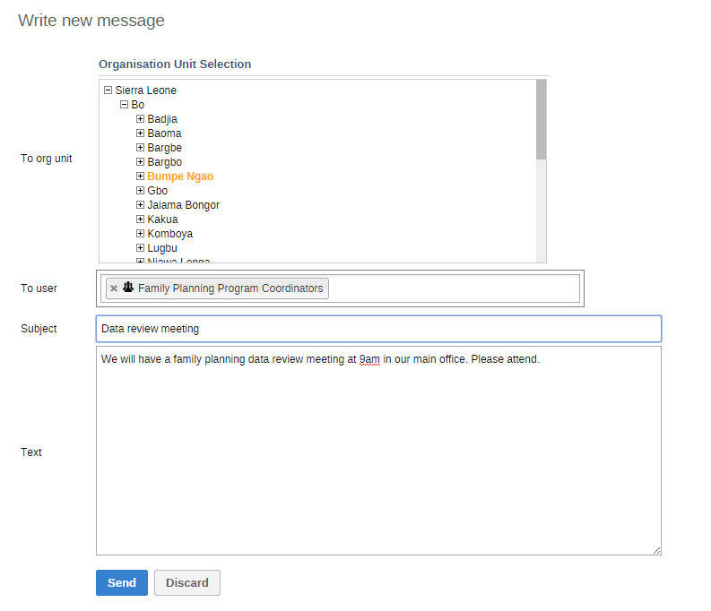

DHIS 2 has a message function that allows different users and user groups to communicate with each other. With this function you can for example recieve feedback regarding data quality and timeliness of submissions, or answer questions from a particular user.
![[Note]](resources/images/admon/note.png) | Note |
|---|---|
Messages are not sent to users' e-mail addresses, the messages only appear within DHIS 2. |
You can send messages to either a specific user, user group or groups of users who have been assigned to particular organisation units.
All users that have access to the dashboard can send a feedback message. Feedback messages are routed to a particular group of users.
| Note |
|---|---|
To configure the feedback message function, you must:
Each time a feedback message is sent, it will then appear as a message in the inbox of each member of the user group. |
|  |
To create a message:
From the Dashboard, click Messages.
Click Write message.
Define who you want to receive the message. You can send a message to organisation units, users and user groups.
In the To org unit field, select the organisation units or group of organisation units you want to send the message to.
In the To user field, select the users or user groups you want to send the message to.
Type a subject and a message.
Click Send.
To read a message:
From the Dashboard, click Messages.
Click a message.
If the message is part of a conversation, you'll see all messages in this conversation.
From the Dashboard, click Write feedback.
Type a subject and a message.
Click Send.
The message will appear in all of the specified users' message inboxes.
| Note |
|---|---|
You will only see feedback messages and have access to the feedback handling options if you are a member of the user group that is set up to handle feedback messages. |
You'll receive feedback messages to your Messages inbox. For feedback messages you have the following options in addition to the messages options:
Table 8.1. Feedback message handling options
| Function | Description |
|---|---|
|
Set status |
All feedback messages get the status Open when created. To keep track of the feedback messages that exist, you can change the status to Invalid, Pending or Solved. You can filter messages in your inbox based on their status. This makes it easier to switch between feedback messages and normal messages. |
|
Set priority |
You can mark feedback messages with different priorities: None, Low, Medium or High. Setting the priority makes it easier to keep track of which feedback messages you need resolved first, and which feedback messages that can wait. |
|
Write internal reply |
When you work in a team of feedback message handling managers, you might want to discuss the feedback message before sending an answer to the sender. You can keep this discussion in the same message conversation as the feedback message itself. To send a reply that can only be seen by other managers, click Internal reply. |